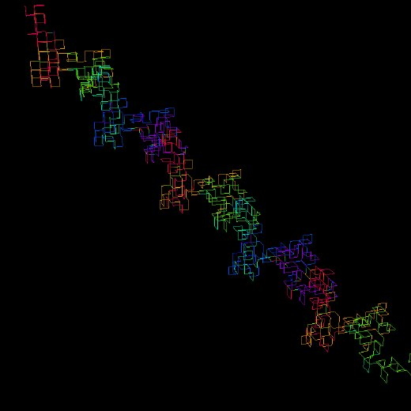
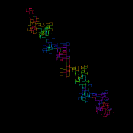
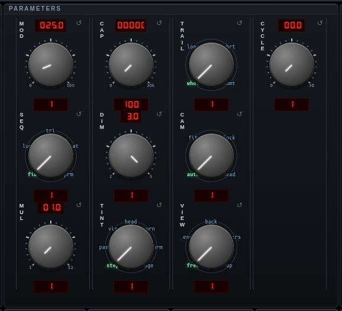

#turtle


Turtle Path — Reduce an integer sequence modulo m and the remainders repeat; the length of the repeat is the Pisano period. Read each term as an instruction — odd turns left and steps forward, even turns right and steps forward, zero does neither — and the walk draws a figure. In three dimensions the parity of the NEXT term decides whether the turn is a yaw or a pitch, which is not arbitrary: the pair (F_n, F_n+1) mod m is the state of the recurrence, and the Pisano period is the period of that pair. One pass decides the rest, without walking further: the figure either closes, drifts in a straight line, or screws away along an axis. The walk never finishes and is never restarted — the turtle is held mid-stride and extended at the Speed knob's rate, forever, and TRAIL is how much stays behind it (whole, long, short, comet) as the oldest scrolls off the far end. CAM is where it is watched from. Only follow cares where the head is; every other setting places the figure by its DRIFT, the one direction it is going overall, known exactly from one pass of the period rather than guessed at from the last few frames — and for a screw it centers on the axis the classification locates, so the figure turns on the spot instead of swinging around it. fit then only decides how big it is drawn, lock holds that size too, and auto fits a closed figure and locks one that drifts. TINT is what a color means — step, pass, visits, heading, turn, term, age — and set COLORS SRC to trl to see it, or leave it on X/Y/Z to read position instead (a flat DIM 2 figure has no Z to follow). MUL multiplies the Fibonacci sequence, CAP limits the terms read for sequences that may not repeat, CYCLE steps to the next modulus every so many seconds, and MOD 0 draws the sequence unreduced. PHYS gives the figure weight: it becomes a rigid body in the plane of the screen — three degrees of freedom, the figure's own shape as its mass — inside a solid box the size of the frame, where GRAV (either way up), FRIC, BOUNCE and SPIN say how it behaves. Press on the figure and you can pick it up and throw it; press beside it and you are turning the view as usual. The walk keeps extruding while it lies there, new points arriving at the head and old ones dropping off the tail, so the figure slides through its own body and marches. PHYS off hands the placing back to CAM.
Open Turtle Path in chaosrack →It opens running, on the model selector, with its own knobs. Rotate it by dragging, zoom with the wheel, and turn the parameters to see what the figure does when the system changes.